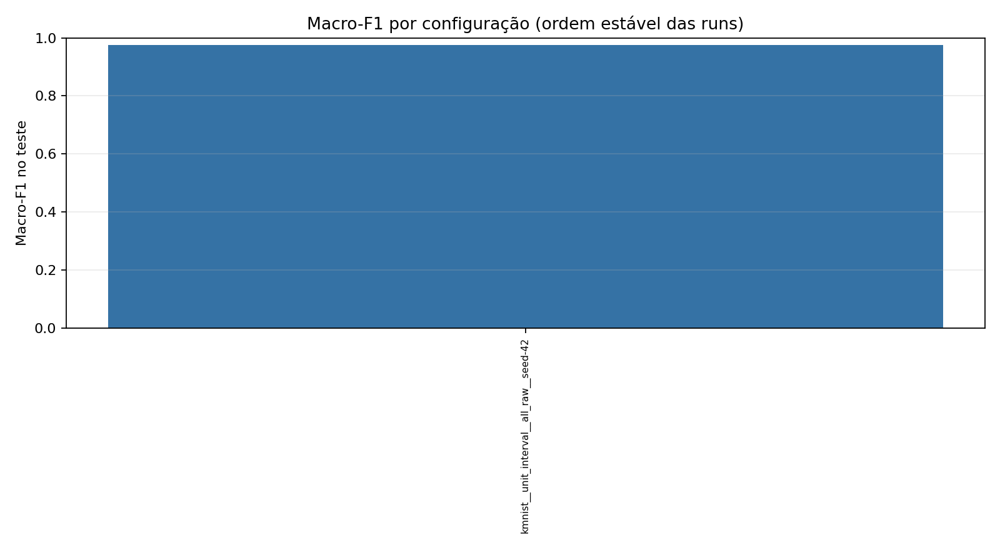

Runs: 1 · Status: {'completed': 1}

| Run | Status | Normalização | Balanceamento | No-op | Seed | Accuracy | Balanced accuracy | Macro-F1 | Detalhes |
|---|---|---|---|---|---|---|---|---|---|
| kmnist__unit_interval__all_raw__seed-42 | completed | unit_interval | all_raw | True | 42 | 0.9743809523809523 | 0.9743809523809525 | 0.9744387481660762 | relatório |